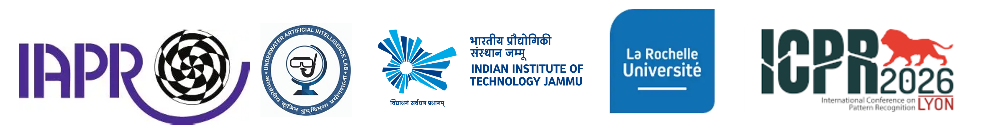

Advances in Underwater Surveillance: Technologies, Challenges and Future Directions
(AUSTech 2026)
ICPR 2026
Lyon, France
Lyon, France

Date: 22 August 2026
Time: 09:00 – 12:15
Venue:
Louis Néel, INSA Lyon
| Time | Program | Time | Program |
|---|---|---|---|
| 09:00 – 09:15 | Opening Remarks | ||
| 09:15 – 10:00 |
Graph Neural Networks for MOS in Underwater Environment:
An Inductive Approach
Invited Talk 1 Prof. Anastasia Zakharova, La Rochelle Université, France |
||
| 10:00 – 10:15 | A Closed-Loop Agentic Framework for Marine Litter Monitoring: Data Synthesis, Augmentation, and Performance-Guided Optimization | 10:15 – 10:30 | From Masks to Images: Mask-Conditional Diffusion for Realistic Synthetic SSS Data |
| 10:30 – 10:45 | Tea Break | ||
| 10:45 – 11:30 |
Underwater Acoustic Communication: Challenges and Intelligent Solutions
Invited Talk 2 Prof. Monika Aggarwal, Indian Institute of Technology Delhi, India |
||
| 11:30 – 11:45 | A Hybrid Framework for Automated Coral Reef Risk Assessment by Zero-Shot Visual Perception and Fuzzy Cognitive Map Inference | 11:45 – 12:00 | DIVE-Net: Depthwise Multi-Dilation Vision Network for Efficient Underwater Image Enhancement |
| 12:00 – 12:15 | Closing Remarks | ||